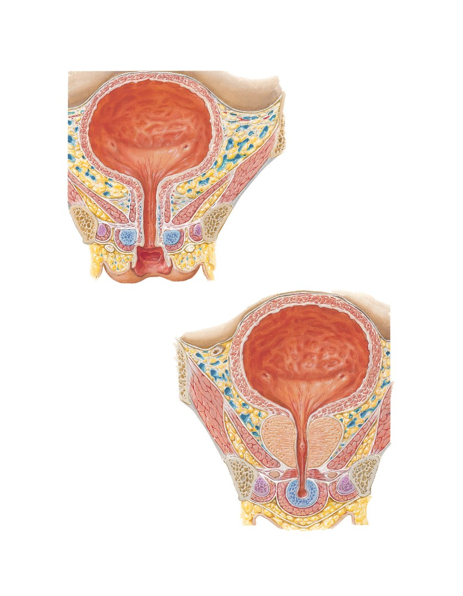

Urinary Bladder: Female and Male
See also Plates 340, 344, 381
Female: frontal section
Parietal peritoneum
Fundus of bladder
Interureteric crest
Left ureteric orifice
Trigone of bladder
Neck of bladder
Paravesical endopelvic fascia
and vesical venous plexus
Vesical fascia
Tendinous arch of levator ani muscle
Obturator internus muscle
Levator ani muscle
Tendinous arch of pelvic fascia
Urethra
Sphincter urethrae muscle
Perineal membrane
Inferior pubic ramus
Round
Crus of clitoris and ischiocavernosus muscle
ligament
of uterus
Bulb of vestibule and bulbospongiosus muscle
Deep perineal (investing or Gallaudet’s) fascia
Superficial perineal (Colles’) fascia
Vagina
Male: frontal section
Parietal
peritoneum
Fundus of bladder
Ductus (vas) deferens
Interureteric crest
Right ureteric orifice
Internal
urethral
Trigone of bladder
sphincter
Neck of bladder
Tendinous
Paravesical endopelvic fascia
arch of
and vesical venous plexus
pelvic
fascia
Tendinous arch of levator ani muscle
Uvula of bladder
Anterior
recess of
Obturator internus muscle
ischio-
Levator ani muscle
anal
fossa
Capsule of prostate
Inferior
pubic
Prostate and prostatic urethra
ramus
Seminal colliculus
Crus of
penis and
Bulbo-urethral (Cowper’s) gland
ischiocaver-
nosus muscle
Perineal membrane and sphincter urethrae muscle
Bulbous portion of spongy urethra
Superficial
Corpus spongiosum and bulbospongiosus muscle
perineal
(Colles’) fascia
Deep perineal (investing or Gallaudet’s) fascia
Plate 348
Urinary Bladder